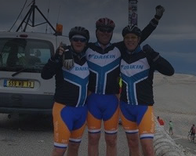
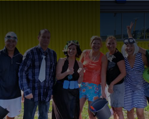
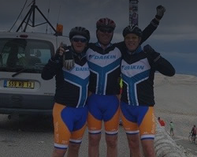
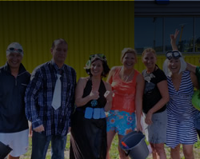

Geen gegevens gevonden
Mooie toespraak door Gorrit-Jan, die mooi kort aangeeft wat het belang van de Stichting ALS is. Daarnaast komt het belang van de vertegenwoordiging mooi naar voren, maar bovenal de fantastische sfeer op ons basiskamp!

Deze dag stond in het teken van herstel van de eerste training. Ook vandaag de tandem opgehaald in het Basecamp. Eerste verkenning gedaan van de beklimming vanuit Bedoin. Het wordt donderdag een zware dag!!!
Na de verkenning een welverdiend pintje genomen op een terrasje in Bedoin
Zondag met de aanwezige fietsers begonnen met een eerste training. Vertrokken met de bus vol met fiesten naar Sault en daarvandaan onderweg naar Chalet Reynard. Bedoeling was om vanuit daar af te gaan dalen, maar het ging zo lekker dat we de laatste zes km naar de top ook maar hebben gedaan. Helaas was de tandem nog niet aanwezig, maar ik heb me nuttig kunnen maken als ploegleider.
De beloning voor een aantal was de afdaling vanaf de top naar Malaucene, waar snelheden werden bereikt van boven de 80 km/uur.
Al met al een nuttige traingsdag
Zaterdag arriveerden een deel van de deelnemers op het basiskamp van ALSJan.com (sommigen na een reis van 18 uur en sommigen na een reis van 10 uur). De tour is een uitdaging, maar de ligging van onze uitvalsbasis is een licht verzachtende omstandigheid.
Op zaterdag 23-5 vertrekken we naar Frankrijk met het hele team. Via deze blog gaan we iedereen op de hoogte houden van alle belevenissen!
Hiernaast alvast een indruk van het hele evenement!
ATTENTIE! ATTENTIE!
Op zondag 19 april van 1700 tot 2000 organiseert de Stichting ALSJan samen met het gelijknamige fietsteam een middag / avond in Palm Party House (bowlingcentrum) met 3 doelen:
- Sponsorgeld bijeenbrengen om de Stichting ALSJan te laten starten en een deel van de organisatiekosten van het fietsteam dat deelneemt aan de tourduals te dekken (alle andere acties en donaties gaan direct naar de Stichting ALS).
- Een gezellige avond te hebben met iedereen die ik (nog niet) ken, oftewel iedereen is welkom, waarbij ik gelijk mijn verjaardag vier.
- Te gedenken dat ik een jaar geleden in deze locatie ontdekt hebt dat er iets niet in orde was, ik nog steeds overeind sta en iedereen te bedanken voor alle steun.
Programma:
Iedere gast mag 1 uur bowlen, krijgt 2 consumpties, 1 portie bitterballen tijdens het bowlen en van 1800 tot 2000 een onbeperkt buffet met sate, patat, rijst, salade, etc.
Palm Party House stelt zowel voor volwassenen als kinderen mooie prijzen ter beschikking! Met als hoofdprijs een bowlingarrangement voor 4 personen twv 200 Euro, een kinderfeestje voor 6 voor de kinderen en nog veel meer.
Prijs:
Volwassenen: 25 Euro
Kinderen: 17,5
Extra consumpties: 2,45 voor de gebruikelijke dranken.
Een deel van de opbrengst gaat naar bovenstaande doelen!
Mijn ambitie is om minimaal 180 gasten bij elkaar te krijgen voor een topmiddag / avond!!
Aanmelden kan via: alsjanbowlt@gmail.com waarna verdere informatie volgt.
Iedereen is welkom!
Wim Linge spint ook bij het Topspincentre in Zwijndrecht. Hier hoorde hij het verhaal van Jan. Dit inspireerde hem om een benefietavond te organiseren voor het team van ALSJan.com op 13 mei 2015. Met partners uit de regio heeft hij een ambitieus doel gesteld. Inschrijven en alle informatie is te vinden op www.alsrace.nl.
Jan is zeer onder de indruk van het enthousiasme, de betrokkenheid en de doelgerichtheid van Wim en alle anderen die bij dit project betrokken zijn.
Aangezien de handen van Jan wat matig functioneren waardoor remmen en schakelen licht uitdagend wordt, is er via de organisatie van de Tour du ALS een tandem geregeld. Volgens Klootwijk tweewielers (die overigens gratis de afstelling gedaan hebben) een zeer mooie fiets, wat we zelf ook vinden. Vandaag voor het eerst getraind met een groot deel van het team, wat goed ging. Heerlijk weer, 3 x maal de Brienenoord over, hoopvolle start na een (winter)seizoen spinnen wat ongetwijfeld geholpen heeft!
Hoewel Jan in eerste instantie een bucketlist niet erg nodig vond, aangezien hij zeer tevreden over zijn leven was (en is), zag hij wel in dat het snel maken van mooie herinneringen topprioriteit heeft. Hoe lang dit nog kan is ongewis, vandaar dat de bucketlist toch op deze site te vinden is. Het eerste item was New York, aangezien Franka en Casper hier heel graag heen wilden.
Tot eenieders grote verbazing was dit item al snel gerealiseerd door 1 persoon die het maken van goede herinneringen van groot belang vindt. Later kwam daar van iemand anders nog een helikoptervlucht bij om het feest compleet te maken. Zodoende reisde de familie Kramer in de voorjaarsvakantie af naar New York. Het werd een fantastische week met dus zeer mooie herinneringen, waarvan hiernaast een kleine impressie te vinden is.
Jan vindt het nog steeds zeer bijzonder hoeveel mooie mensen hij tegenkomt in deze situatie. Wat een steun en initiatieven! Daarnaast is het heel fijn om te weten dat iedereen in Jan's omgeving zaken zoals dit onvoorwaardelijk gunt.
In de Binnenvaartkrant van 25 februari 2015 verscheen een mooi stuk over Jan (paginagroot). Het artikel vertelt het hele verhaal, vanaf de carriere in de binnenvaart tot aan de diagnose en alle acties.

Tegelijkertijd met het verschijnen van het artikel in de Binnenvaartkrant, werd er ook in 'De Brug' weer aandacht besteed aan team ALSJan.com en alle andere zaken die op het moment van publiceren spelen.
In de nieuwe glossy van Hendrik-Ido-Ambacht (overigens een bijzonder mooi blad) eo, verscheen een artikel over ALSJan. De foto is gemaakt door Romy van den Boogaart, speciaal hiervoor heeft zij op de vroege zondagochtend een fotoshoot gehouden tijdens de spinles bij het Topspincentre in Zwijndrecht, waar bijna het gehele ALSJan.com team al maanden getraind wordt door Patricia Ringeling. Ook dit weer geheel belangeloos!
Op donderdag 5 maart krijgt Karin van Jan van De Fietsen van Ambacht een hele mooie cube damesracefiets uitgereikt (helemaal op maat gemaakt) waarmee zij met het ALSJan.com team mee gaat doen aan de Tour du ALS. Een super sponsoractie!
Aan het einde van het 2014 organiseerde Daikin de 'ik ben trots actie'. Iedereen kon op de site van Daikin doorgeven waar hij / zij trots op is. Met dank aan Paul Sap, die het doel bedacht heeft. Voor elke reactie doneert Daikin 10 Euro aan de strijd tegen ALS. Op 16 januari bracht Jan een bezoek aan Daikin, waarbij hij iedereen bedankte voor de steun en uitgelegd heeft wat het betekent om ALS te hebben. De ontvangst was zeer warm en iedereen was ook zeer geinteresseerd! Er waren 141 reacties, die Daikin afrondt op 150 waardoor er een bedrag van 1500 Euro aan sponsorgeld beschikbaar komt. Men laat dat via ALSJAN.com bij de Tour du ALS lopen. Tijdens de vrijdagmiddagborrel hebben we er op getoast en misschien wel de basis gelegd voor een langdurige samenwerking. Een mooie club; Daikin!

Onvoorstelbaar wat Bernard en Robbert-Jan (en alle andere betrokkenen binnen Treeway natuurlijk) voor elkaar weten te krijgen. Je krijgt ALS, richt zelf een biotechbedrijf op en gaat de wereld bestormen! Dat ALS opgelost wordt is een feit, meer een kwestie van wanneer.
Ook Jan heeft al opnames gemaakt voor de ‘ik ben overleden campagne’. Mocht Jan overlijden dan kunnen de foto‘s en films gebruikt worden voor het vragen van verdere aandacht voor de strijd tegen ALS. Er is een zeer groot aantal foto‘s gemaakt en zeker 10 verschillende filmpjes voor verschillende doelgroepen / media. Deze site is ook onderwerp van 1 van de filmpjes
In Gramsbergen sloten drie (niet) dj's zich vanaf 2e kerstdag 4 x 24hr op in een Glazen Huis wat mooi gemaakt was in dorpskroeg 'The Alley'. Het hele dorp zette zich in voor deze actie, met als aanleiding een relatief groot aantal mensen in het dorp dat aan ALS overleden is de laatste jaren. Een van de overledenen was de moeder van de eigenaar van de kroeg. Er werd aan patienten gevraagd om aanwezig te zijn bij het openen van het huis en de bekendmaking van het opgehaalde bedrag. Aangezien ze toch in de buurt op vakantie waren (in de buurt is in het Oosten een relatief begrip:)), togen Jan, Jan Kocken en Bram van Hengel naar Gramsbergen om een hele mooie avond te beleven. Jan gaf een interview voor een bomvol cafe, net als collega Henk. Hier links ziet u er een samenvatting van zoals dit ook op RTV Oost verschenen is
In de laatste zaterdageditie van het AD van 2014 verscheen er een mooi artikel over het ALSJan.com team en de beklimming van de Mont Ventoux, met een foto van Jan en Franka. Uiteraard is het hoofddoel om de strijd tegen ALS te promoten, maar ook om regionaal aandacht voor ons team te genereren. Op de foto valt niet erg op dat het goot en, als je goed kijkt, zie je dat de trappers van Jan ontbreken en de banden nog plat zijn :). In het Topspin Centre wordt overigens hard getraind!
Na alle aandacht via de Ice Bucket Challenge, komen er kort na elkaar ook nog twee bioscoopfilms uit die over ALS gaan, ongelooflijk. Karin en ik waren uitgenodigd voor de premiere in Tuschinski van you're not you in december 2012, een bijzondere ervaring, zeker gezien het feit dat de film over je eigen ziekte gaat en niet overmatig goed afloopt. Het geeft wel een mooi beeld van wat ALS in het dagelijkse leven inhoudt. Of het nou een gezellige kerstfilm is...
Mooi is ook dat de Stichting ALS door de distributeur haar naam aan de film in Nederland mocht verbinden
In Hendrik-Ido-Ambacht vindt er elk jaar een evenement plaats: de zomerdag. Dit jaar hadden we een stand waar Sylke Kramer, Iris van Lieshout en Manja van Hengel de strijd tegen ALS hebben gepromoot en geld hebben ingezameld voor het ALSJan.com fietsteam wat in 2015 weer meedoet aan de Tour du ALS.
Vanwege het enorme bedrag dat Franka heeft opgehaald voor de Amsterdam City Swim, wordt zij door een jury onder leiding van burgemeester Heijkoop als een van de helden van Ambacht benoemd. Speciaal hiervoor was er een avond georganiseerd in Dock 3.
Candy Dulfer is ambassadrice voor de Stichting ALS en vaak onderdeel van Club Dauphine. Voor 1 keer is dit naar Eindhoven verplaats ten bate van de Stichting ALS. Jan en Franka kregen kaartjes gesponsord, zodat ze getuige konden zijn van een schitterende avond waarbij veel bekende mensen die bijdragen werden ontmoet. Ook ontmoetten Jan en Franka Hein van Duivenboden, de mede-organisator, die helaas net overleden is.
Ook Jan heeft al opnames gemaakt voor de ‘ik ben overleden campagne’. Mocht Jan overlijden dan kunnen de foto‘s en films gebruikt worden voor het vragen van verdere aandacht voor de strijd tegen ALS. Er is een zeer groot aantal foto‘s gemaakt en zeker 10 verschillende filmpjes voor verschillende doelgroepen / media. Deze site is ook onderwerp van 1 van de filmpjes
Op 13 november organiseert de 'Vriendenclub' een van haar evenementen in het Isala Theater in Capelle ad IJssel. Dit maal staat Bernard Muller centraal en zijn bedrijf Treeway. Treeway is opgericht door Bernard (en Robbert-Jan Stuit) met als doel zelf medicatie te gaan ontwikkelen, oftewel de regie in eigen hand nemen. Een eigen biotechbedrijf oprichten en daarmee je eigen ziekte bestrijden was voldoende om een theaterzaal vol te krijgen. De zaal luisterde ademloos naar het verhaal van Bernard die zeer professioneel door Eva geinterviewd worden. Hoewel het niet direct in de media was, is elke foto met Eva een media plaats waard. Buiten het feit dat zij prettig op de foto staat, is ze ook oprecht geinteresseerd. Heel bijzonder.
De volwassen editie was na het bekend worden van de diagnose van Jan al vol, maar kinderen konden wel nog inschrijven. Vandaar dat Franka en een groot aantal vriendjes en vriendinnetjes mee deden. Het resultaat mocht er zijn, want Franka haalde van alle 2000 deelnemers het hoogste individuele sponsorbedrag op, ruim 15000 Euro. Een enorm aantal mensen steunden haar. Dit resulteerde in heel veel media-aandacht: Interviews met de organisatie wat op grote schermen werd uitgezonden. Een item bij SBS6 waar het hele gezin uitgebreid in beeld kwam. Franka werd (alweer) geinterviewd door het Jeugdjournaal Een optreden in de show van Jeroen van Inkel en als uitsmijter een huldiging door Humerto Tan voor een stampvolle megatent waarbij de Weert Jan Weerts bokaal werd uitgereikt, vanwege het hoogste sponsorbedrag. Het werd een fantastische dag met de deelnemers, maar ook met alle vrienden en familie die aan kwamen moedigen.
Ook in ons regionale weekblad 'De Brug' werd er aandacht besteed aan onze deelname aan de Amsterdam City Swim en de sponsoring van een busje door Van Gent Autoverhuur. Het leuke interview had het artikel hiernaast als resultaat.
Op 26 augustus 2014 werd er 's ochtends gebeld dat het Jeugdjournaal diezelfde avond een item wilde maken over ALS en de ice bucket challenge, die op dat moment op haar hoogtepunt was. Of we over een uur wilde filmen?? Ik ben snel naar huis geraced en onderweg Franka van haar paard af getrokken. Ondertussen ontving Karin de filmploeg en zetten zij alles klaar. Franka kwam met bezweet hoofd binnen, waarna de opnames direct startten. Men maakte een item met Jan, Franka en Casper, wat dezelfde avond nog werd uitgezonden
Ook het Loodswezen Regio Rijnmond deed mee aan de icebucket challenge! Op 1 september, een schitterende nazomerdag, stond een groot deel van de medewerkers tijdens de lunch klaar naast het heliveld om koud water over zich heen te gooien. Dit om Jan te steunen (fantastisch) en om iedereen op te roepen te doneren. Het resultaat mocht er zijn.

In de zomer van 2014 werd er in het personeelsblad van het Loodswezen, 'de Aktueel', uitgebreid aandacht besteed aan de ziekte van Jan, zijn actviteiten en vooral aan het motto: 'doorgaan en niet bij de pakken neer gaan zitten'.
Onder de naam Loodswezen & Friends deed Jan met Joost Leenhouts, Paul Sap, Dennis Lenting en Jan Kocken mee met de Tour du ALS. Ondanks de korte voorbereidingstijd (de diagnose was nog vers) werd er een mooi huis gehuurd en kwam het team in actie. Er werd zelfs nog een mooi bedrag opgehaald waarmee de doelstelling van 1500 Euro per deelnemer ook nog werd gehaald. Het werd een zeer bijzondere en mooie week in Zuid-Frankrijk.